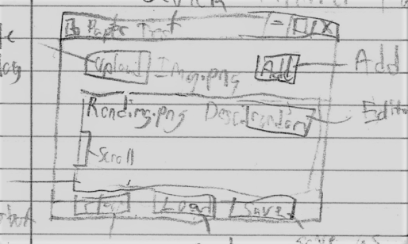
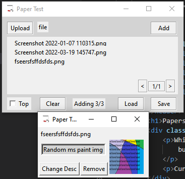

While I was doing random stuff in my room, I randomly thought about making a better file sorter. I know that PDF's already exist, but I wanted to make a way where you can flip through different pages. There would also be different tools which would help you.
Currently, it's still an idea, but I'm getting closer to making it.
I started with writing stuff down. I made a quick sketch of what I wanted to create. I didn't know what to make it in yet, I decided to use Python with tkinter as a test. That's most likely going to change with the main program.
I started on June 1st 2022 with the gui. I got the buttons and the basic structure all set up and made it so you can import files. The next day, on June 2nd, I mostly looked online about how to create a ZIP file with Python, but nothing was working for some reason. I used the built in zipfile module to load the file. The next day, I got "shutil.make_archive" working, and made it so the zip files were made as a ".2pf" file. I also made the clear button work.
On June 4th, I added a label that says the last task done. I didn't do anything until June 7th, where I created a "popup" class, where you can remove an item or change it's description. I made a text file that had the descriptions in it to be saved. I was trying to make a scrollable canvas work, but it wasn't working for some reason, so I coded left and right buttons. The next day, on June 8th, I did some bug fixing and made an unsaved data checker.
